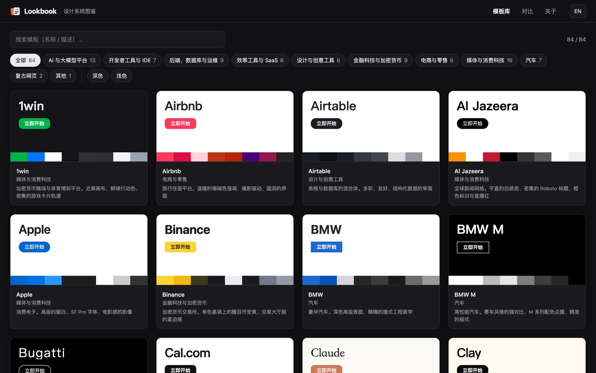
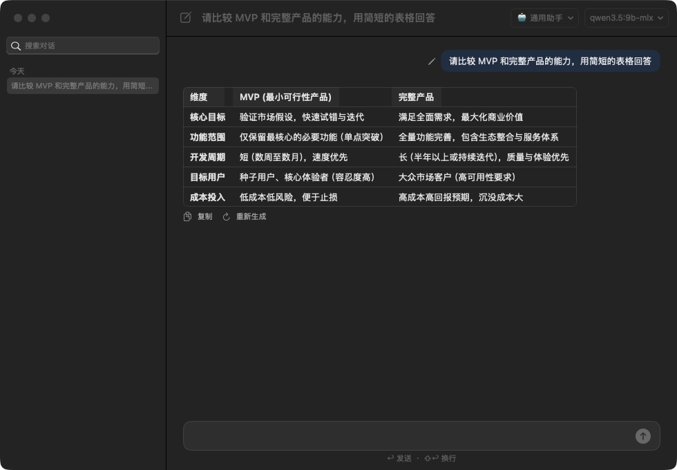
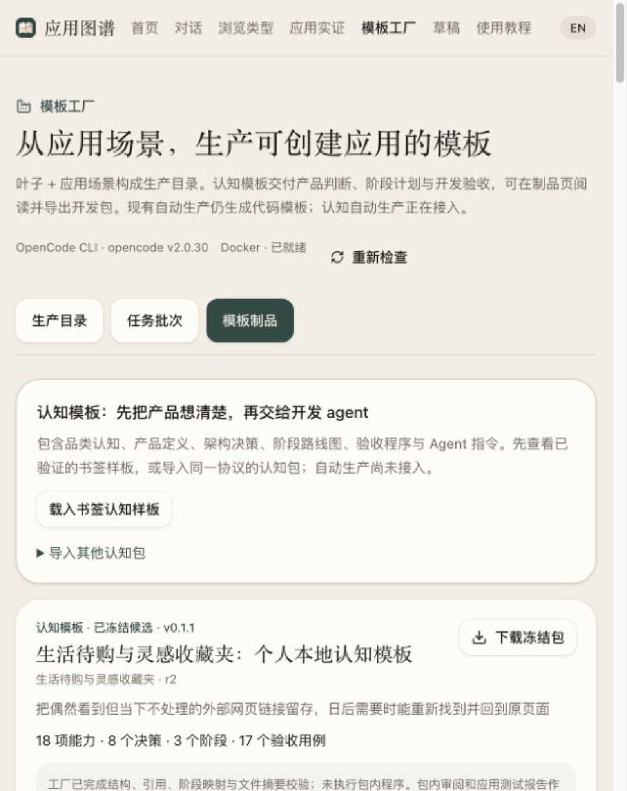

01 / Thought02 / Structure03 / Form
From Thought to Form.
从思考到创造。

网站 / 工具 已上线
Lookbook设计系统图鉴
把 80 余套知名产品的设计系统渲染成可以直接看、直接比、直接拿走的页面。
80+套设计系统
10个类别
2种界面语言

Aide · 本地 AI 桌面入口软件 / macOS 应用 开发中按下 ⌘⌃L，说出你想做的事，或先选中文本。本地 Ollama 模型，不上传。

Application Atlas · 软件应用类型资料库软件 / 资料库 开发中1,805 个软件类型、29 个大域的资料库及本地工作台。
其他作品 研映 Research2Video · PersonalSpace · Radar 全部作品 →